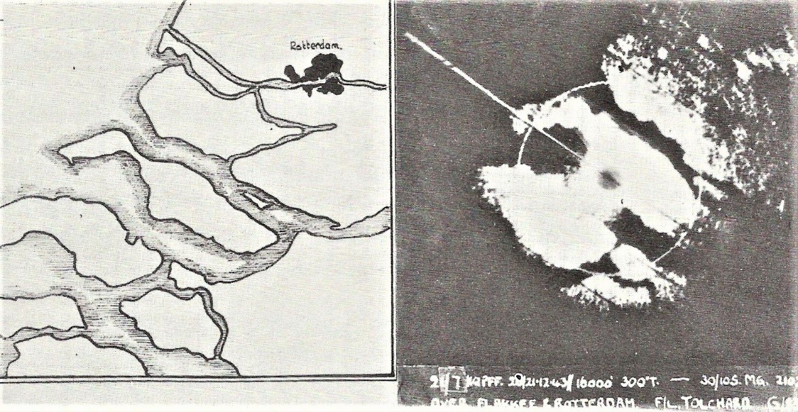
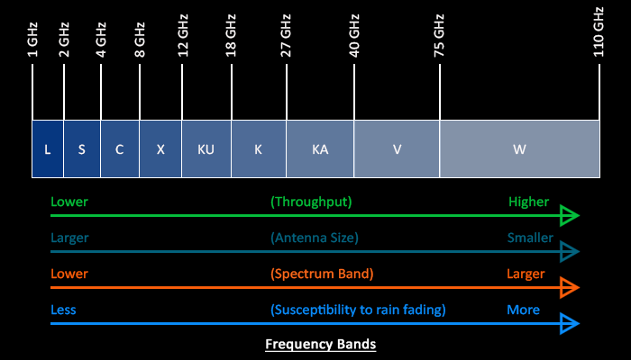
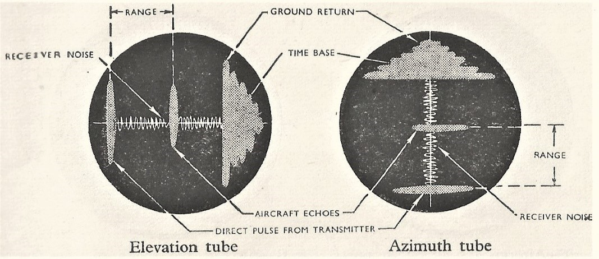
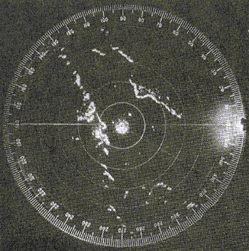
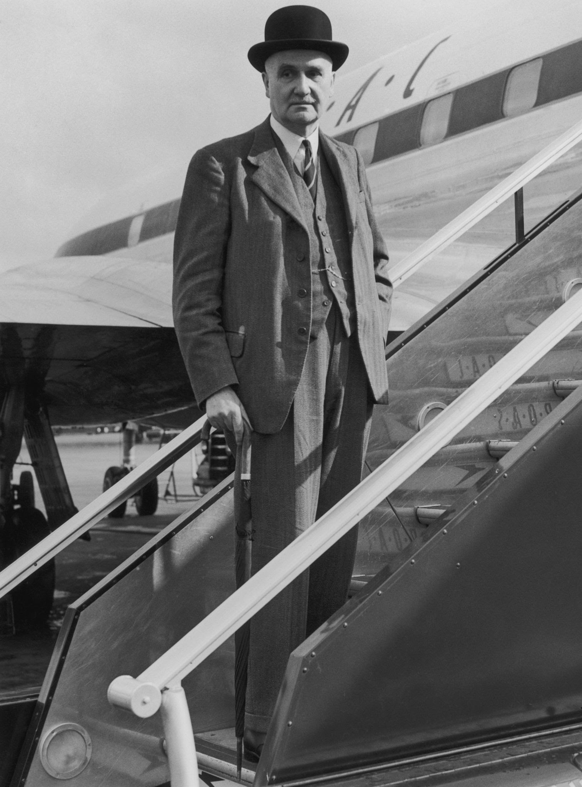

레이더 개발 이야기 (39) - 센티미터의 마법
게시: 2023-07-20T06:30:39+09:00
<왜 2~4 GHz를 S band라고 부르게 되었을까> 공대공 레이더 연구를 시작하던 "Taffy" Bowen이 개발 초창기 1.5m 파장 길이의 상대적 낮은 주파수 전파로 테스트를 할 때부터, 이미 레이더 스코프에 정체를 알 수 없는 뚜렷한 반사파가 잡히는 것을 알고 있었음. 그런 물체들은 부두의 구조물, 절벽, 선박 등이었는데 공통점은 물 위에 수직으로 서있는 물체들이었다는 것. 이는 전파를 잘 반사하지 않는 매끈한 수면 위에 수직으로 서있는 물체가 상대적으로 뚜렷한 반사파를 보내기 때문이었고, 이 발견을 이용해 공대함 레이더 ASV를 만들어 대잠수함 작전에 매우 잘 활용했음.


(전에 ASV 설명하면서 그렸던 이 그림 기억하시는지. 위가 지표면에 부딪히는 전파의 반사이고 아래가 해면에 부딪히는 전파의 반사.)
공대함 레이더가 가능하다면 공대지 레이더도 가능하지 않을까? 안 되었음. 이유는 수면에 비해 대지는 훨씬 거칠고 전파를 훨씬 더 잘 튕겨내었기 때문에 대지에서 튕겨나오는 반사파가 너무 강해서 건물이고 뭐고 다 새하얗게 가려버렸기 때문. 게다가 바다 위에서야 적 전함과 잠수함을 찾는 것이 의미가 있지만, 지상에 뺴곡하게 바글거리는 사람과 나무와 트럭과 건물 같은 것을 뭐하러 레이더로 찾나? 그래서 공대지 레이더는 필요도 없고 가능하지도 않은 거라고 판단되어 그냥 잊혀져 버렸음. 그러다가 1940년, 전에 언급한 대로 버밍엄 대학의 John Randall와 Harry Boot가 고주파의 강력한 전파를 만들어내는 cavity magnetron를 만들어내는 쾌거를 올렸음. 이를 통해 수천 Watt 강도의 9cm 길이의 높은 주파수를 가진 전파를 자유자재로 쏠 수 있게 되었음. 이건 우연한 발명이 아니라 공대공 레이더에 필요한 센티미터 길이의 파장을 만들기 위해 온갖 노력을 기울이던 수많은 연구 중 하나가 잭팟을 터뜨린 것. 공대공 레이더에 1m 이상 되는 장파를 써서는 곤란하고 수cm 단위의 단파를 써야 했던 이유는 간단. 전파는 파장이 짧을 수록, 즉 고주파일 수록 직진성이 강하기 때문. 미터 단위의 장파는 미터 단위 길이의 안테나가 필요했으므로 항공기에서는 야기(Yagi) 안테나로 지향성을 주는 것에 한계가 있었고, 앞을 보고 쏘아도 결국 넓게 퍼져 대지에 부딪혔음. 대지에서 튕겨져 나오는 강력한 반사파는 모든 것을 가려버렸으므로 공대공 레이더의 탐지거리를 항공기에서 대지까지의 거리, 즉 항공기 고도로 제한시켜버렸음. 그런 기술적 장벽에 막혀있는 상태에서 cm 단위의 지향성 좋은 전파를 만들어주는 캐버티 마그네트론이 개발되자 로열 에어포스 공대공 레이더 개발팀은 쾌재를 올렸음. 1941년 초, 그렇게 캐버티 마그네트론을 사용한 공대공 레이더를 만들어 Blenheim 폭격기에 장착한 뒤 테스트 중이던 엔지니어들 중에 Philip Dee가 있었음. 이 친구가 하늘에서 테스트하다 보니 송신 안테나가 땅을 향했을 때 예전에 보웬이 보았던 여러가지 건물들이 레이더 스코프에 포착되는 것이 보였음. 그런데 이 물체들은 1.5m 전파를 썼을 때와는 매우 달랐음. 일단 하나하나의 건물이 매우 선명하게 보였고, 무엇보다 중요한 것은 수면이 아니라 대지면 위에 놓인 건물들도 또렷이 구분이 되었음.

(네덜란드 해안의 모습을 H2S 레이더로 스캔한 모습)
그러나 Dee에게는 공대공 레이더가 더 급한 일이었으므로 그에 대해서는 일단 관심을 접었음. 당시 Dee가 개발 중이던 것은 AIS radar. 이건 전에 보웬이 개발한 AI (Airbourne Intercept) 레이더의 이름 뒤에 센티미터 길이의 파장을 쓴다고 해서 뒤에 S를 붙인 것임. 다들 아시다시피 센티미터는 centimeter이지 sentimeter가 아니지만, 그렇다고 AIC라고 붙이면 센티미터라는 의미가 퇴색되므로 일부러 "s"entimetric이라고 써서 AIS라고 한 것. 현재 전파 주파수 대역에서 2~4 GHz, 즉 15~7.5 cm 길이의 전파를 S band라고 부르는데, 그 S 대역이라는 이름의 유래는 "Short wave"라는 것이 정설이지만 이때 로열 에어포스의 "s"entimeter 표기에서 나온 것이라는 썰도 있음.

(L은 long, S는 short, C는 S와 X의 compromise, X는 정말 WW2 당시 화기관제 시스템에 사용되던 레이더에서 쓰던 주파수라서 crosshair (십자조준선)을 따서 X(cross)라고 부른다는 것이 정설.)
<H2S가 대체 무슨 뜻이야?> 1941년 8월 Butt report가 출간되었고, 이를 통해 여태까지 로열 에어포스 폭격기들이 밤중에 길을 못 찾아 엉뚱한 곳에 폭탄 낭비만 하고 있었다는 것이 밝혀짐. 난리가 난 로열 에어포스는 Gee 등 전파 항법을 준비했는데, 그런 노력 중 하나로 열린 폭격기 사령부(Bomber Command)의 미팅에 필립 디도 참석. 이 자리에서 디는 테스트 중이던 공대공 레이더 AIS에서 희한한 현상을 보았는데 어쩌면 이것이 밤중에 폭격기들이 길 찾는데 도움이 될지도 모르겠다고 진술. 이 주장을 입증하기 위해 11월 블렌하임 폭격기에 AIS를 장착하고 약 2.4km 고도에서 지표면을 전파로 스캔하는 테스트를 진행. 결과는 대성공. 56km 떨어진 마을의 윤곽을 파악. 이에 고무된 로열 에어포스는 1942년 1월부터는 아예 AIS를 개조하여 공대지 레이더 개발을 시작. 이때 큰 도움이 되었던 것이 PPI (plan position indicator) 디스플레이. 원래 루프트바페에서 먼저 개발해서 레이더 스코프로 사용하던 이 현대식 디스플레이는 기존의 수평선 방식의 A-scope에 비해 훨씬 직관적이고 거의 실물 지도에 가까운 모습을 보여주었음. 그리고 이때 캐버티 마그네트론을 이용하여 개량 연구를 하고 있던 공대함 레이더 ASV Mark III도 공대지 레이더와 함께 개발되고 있었는데, 이들은 가급적 동일한 부품과 방식을 사용하기로 하여 좀 더 쉽게 양산할 수 있도록 기획.

(이것이 1942년 이전까지 사용되던 A-scope. 물론 이후에도 많이 사용되었음.)

(이것이 PPI 스코프. 원의 중심에 레이더 본체가 있음.)
그런데 공대공 레이더는 AI (Airbourne Intercept), 공대함 레이더는 ASV (Air-to-Surface Vessel)이라는 나름대로의 독자적 이름이 있었는데, 공대지 레이더만 볼품없이 AI의 곁가지 부산물처럼 AIS라고 부를 수는 없는 노릇. 그래서 처음에는 임시로 BN (Blind Navigation)이라고 부르다가, 곧 다른 이름으로 불리게 되었는데 그 이름은 뜻밖에도 H2S라는 알 수 없는 이니셜. 이 기묘한 이름은 많은 이들의 궁금증을 불러 일으켰고, 그건 처칠의 수석 과학 고문이던 Cherwell 남작 Frederick Lindemann도 마찬가지. 그도 연구진에게 H2S가 무슨 뜻의 이름이냐고 물었고 연구원 중 하나가 "Home Sweet Home"이라고 대답. 처웰 남작은 '폭격기 조종사들에게 집으로 찾아오는 길도 안내해주는 레이더니까 그렇게 이름을 붙였나보다'라고 생각하고 주변 사람들에게도 그렇게 전함. 그러나 물리학자이자 로열 에어포스에서 레이더 관련 정보전을 이끌고 있던 R.V. Jones에 따르면 H2S라는 이름은 진짜 황화수소(H2S)에서 나온 것이라고. 원래 공대지 레이더로 지상 물체들을 스캔할 수 있다는 것이 알려진 뒤에도 한동안 개발이 중단되었는데, 그 이유는 처웰 남작이 그런 쓸데없는 물건을 만들다가 정작 중요한 공대공 레이더 개발 일정이 늦어질까봐 싫어한다고 알려졌기 때문. 그런데 정작 몇 달 뒤 처웰 남작이 공대지 레이더 개발 어떻게 진행되고 있냐고 물었고, 그건 일단 중단시켜 놓았었다는 대답을 듣자 '썩은 냄새가 난다(it stinks)'라며 화를 냈음. 그래서 공대지 레이더의 이름은 썩은 냄새가 나는 가스인 황화수소를 따서 H2S라고 부르기 시작한 것.

(본의 아니게 H2S 레이더의 이름을 지어주게 된 처웰 남작 프레더릭 린더만. 이 양반은 독일 공장 폭격에 자꾸 실패하자 대신 도시의 민간 거주지역도 마구 폭격하여 그 공장에서 일하는 노동자들이 출근을 못하도록 하자고 한 dehousing 개념을 처칠에게 권고한 것으로 악명 높음.)